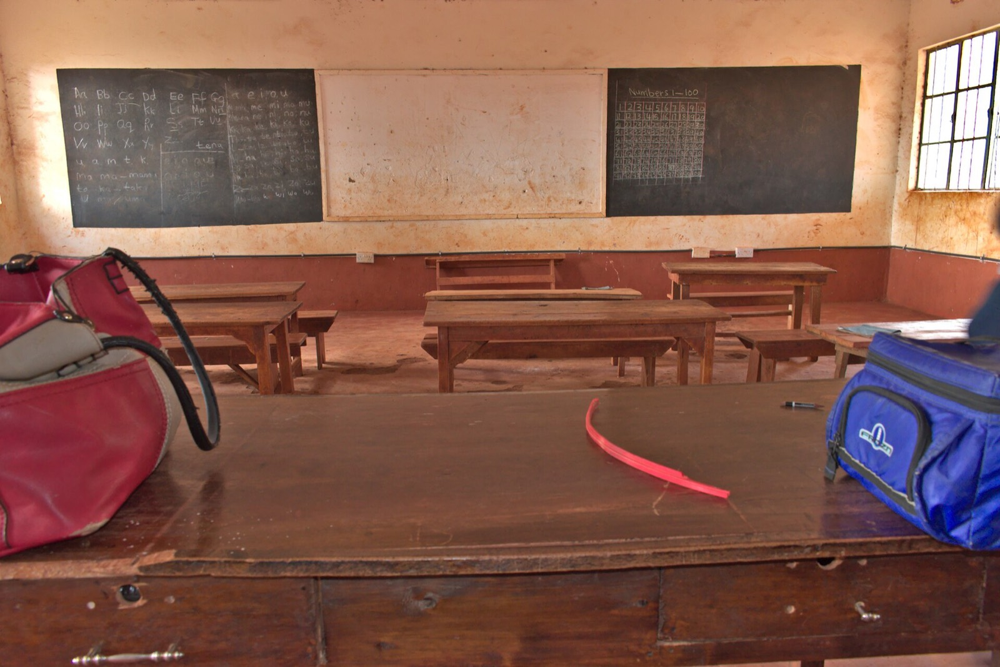
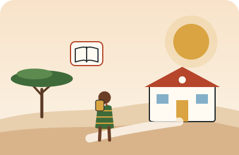
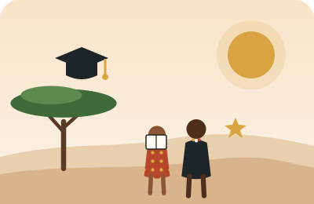
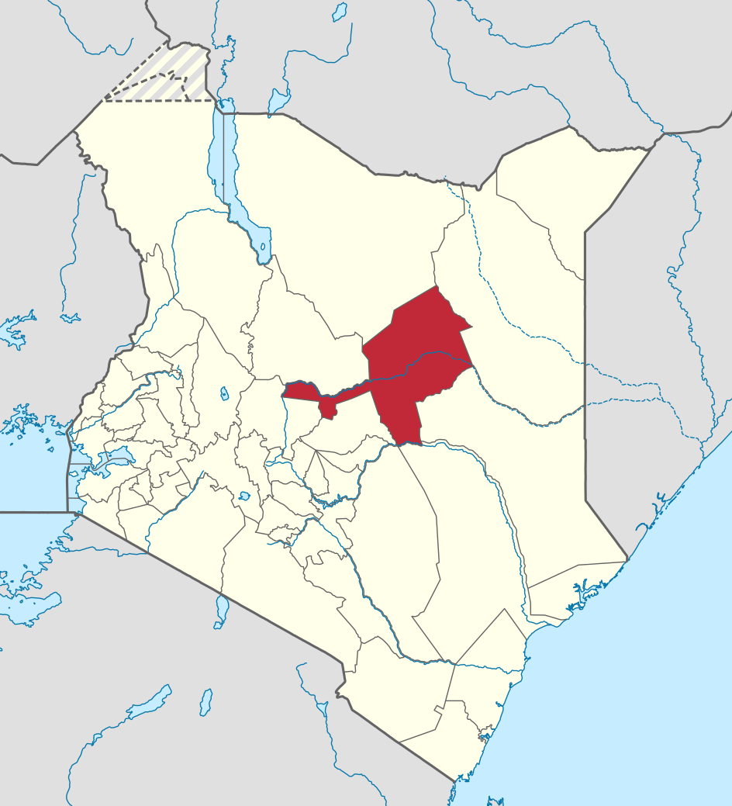

Educate · Protect · Empower
Every child deserves
a future.
We help vulnerable children across Isiolo County get to school, stay safe and grow into confident, independent young people.
Colours and logo: a proposal inspired by northern Kenya (red earth, acacia, savanna gold, dusk), with a thin bead-colour band as a quiet nod to the region's beadwork. The sun-over-acacia logo is a placeholder: Cliffe is designing the real one.
Why this hero: Cliffe's own lines lead ("Every child deserves… a future", "Educate. Protect. Empower."). A rainbow over acacia land says "hope" without showing any child, so no consent is needed. One action only: Sponsor a child.
Who we are
A community organisation in Isiolo, working for children's education and safety.
Working across Isiolo County's diverse communities, we remove the barriers that keep children out of school: fees, poverty, distance, and risks to their safety.
Educate
School fees, uniforms, books and learning materials, paid straight to schools.
Protect
With child protection authorities and approved care providers, we help children at risk stay safe and in school.
Empower
Mentors, career guidance, digital literacy and life skills, with graduates coming back to guide the next group.
Source: Cliffe's "Who We Are" and "What We Do". "Graduates coming back to mentor" is from Josephine's 31 Oct call. Three words, three columns: the tagline becomes the page's structure.
Who we support
The children most likely to be left behind.
Source: Cliffe's seven priority groups, word for word in meaning. Each child is assessed individually, never by community (his background doc). No community is named next to a harm (our rule).

Artelnjeru, CC BY-SA 4.0 (placeholder)Our work
Five programmes, one promise: education and protection go hand in hand.

Education sponsorship
Fees, uniforms, books and essentials for vulnerable and promising students.

Girls' education
Keeping girls in school, preventing early marriage and FGM, building leaders.

Child protection and safe care
With authorities and approved care providers, for children facing abuse or unsafe homes.

Family and community
Parents, elders, women and faith leaders creating safer homes for children.

Mentorship and talent
Career guidance, leadership, digital literacy and life skills.
Source: Cliffe's five programmes. "Safe Homes" is renamed "safe care" so it never reads as the Foundation running a children's home, which Kenyan law restricts (Children Act 2022); his own text already says "approved care providers".
Our impact sample numbers
Every shilling, traced from donor to classroom.
Updated every week from our records. We publish totals, never children's names.
Why: transparency is what funders check first, and it's the core of Joseph's tracking system. These numbers come live from the Foundation's own tracker (totals only). 5 students and KES 1.22M are from the sponsorship profiles; 38% is a placeholder.
How your gift works
Simple, and fully accounted for.
You give
M-Pesa, PayPal or bank transfer.
Foundation account
Every gift goes to the Foundation's own account.
School paid
Fees go directly to the school, receipt kept.
Student recorded
Attendance and progress tracked each term.
You hear back
A thank-you, then a short update every month.
Why: answers a sponsor's real question, "where does my money go?", in five steps. It's the donor-facing side of the tracker, donation log and monthly update we planned.
Where we work
Isiolo County, northern Kenya.
A culturally diverse county of pastoralist, agro-pastoralist and farming communities, including the Borana, Samburu, Turkana and Meru, alongside Somali and other families. Drought, distance and insecurity make school hard to reach for many children.
Source: Cliffe's background document. The community-by-community challenges stay in our grant materials, not on the public site, so no community is shown as the problem.
Placeholder film: "Northern Kenya: from the forest to the desert", Xavier de Diego, CC BY-SA 3.0. To be replaced with the Foundation's own footage.
Latest news
What we've been doing.
The Foundation is registered
Queen of Peace Hope Foundation can now work across Isiolo County and beyond.
Read update →Talking with families
Meetings with parents and elders on keeping girls in school.
Read update →Back to school
Our students start the new term with fees paid and books in hand.
Read update →Why: a live "what we're doing" feed was Joseph's idea; Cliffe writes an update in a simple form and it appears here only after Josephine approves it. Keeps the site alive without a developer.
Sponsor a child, transform a future
Every child deserves protection. Every child deserves education.
Individuals, families, businesses and institutions can all help a child reach school and stay there.
Source: Cliffe's closing lines, nearly word for word.
About us
Protecting a child and educating a child are one responsibility.
Queen of Peace Hope Foundation is a community-focused organisation based in Isiolo County, Northern Kenya.
Our mission
To provide vulnerable children with access to quality education, protection, mentorship and opportunities that enable them to become confident, independent and responsible members of society.
Our vision
A society where every child enjoys education, protection, dignity and equal opportunities to build a better future.
Our approach
- Partnerships with schools, government, community leaders, families and development partners
- Family-based care first, always in the child's best interest
- Each child assessed individually, never by community
- Respect for every community's culture, knowledge and resilience
 Daniel Case, CC BY-SA 4.0 (placeholder)
Daniel Case, CC BY-SA 4.0 (placeholder)"Education is one of the most effective ways of breaking the cycle of poverty."
Source: mission, vision and approach from Cliffe's content; the headline line is from his background document ("protecting a child and educating a child must be treated as one responsibility").
Where we work
Isiolo County
Home to Borana, Samburu, Turkana and Meru communities, alongside Somali and other families. Children here may face long distances to school, drought and livestock losses that strain family budgets, and pressures that pull girls out of class. Positive change is already led by elders, women, teachers and local groups.
Why: describes needs and strengths together, as Cliffe's document asks ("not to portray any community as uniformly harmful").

Map: NordNordWest, CC BY-SA 3.0 DE.
Our people
Founder and team
Founded by Josephine Ekiru, a peacebuilder from Isiolo and founder of the Queen of Peace Initiative, recipient of the 2021 Women Building Peace Award.
Our safeguarding promise
Children's safety comes first
- We never publish a child's name, face, school or village
- Stories are shared only with consent from the child and guardian
- Concerns are reported to the right authorities
- Every gift goes to the Foundation's own account
Why: funders and donors look for a safeguarding statement before giving; Cliffe raised consent and data protection on the call. Team photos and roles only with each person's OK.
Our work
Education first, with safety and family at its side.
Five programmes that work together, starting with education sponsorship.
Education sponsorship
We find students who are out of school or about to drop out, link them to a place in a local school, and pay what stands in the way: fees, uniforms, books and essentials. Boarding school where a child needs to be safe.
What we track
- Fees due and paid, with school receipts
- Attendance each term
- Progress to the next class
Girls' education and empowerment
Keeping girls in class through the long December holiday and beyond, preventing early marriage and FGM, and building leaders through mentorship.
Includes
- Mentors and role models
- Support for teenage mothers to return
- Alternative rites of passage, with communities
Child protection and safe care
With child protection authorities and approved care providers, we support children facing abuse, neglect or unsafe homes, through family-based and community care first.
Partners
- County Children's Services
- Schools with boarding
- Approved care providers
Family, community and mentorship
Parents, elders, women and faith leaders creating safer homes; career guidance, digital literacy and life skills for students.
Coming later
- Livelihoods for families
- Recovery after drought and floods
Source: the order follows Cliffe on the 13 Nov call: education first, then livelihoods, then climate. "Long December holiday" and "boarding for safety" are his words from the call. "What we track" is Joseph's tracking plan, shown publicly so funders see the rigour.
Open by default
Everything we do is tracked.
Everything we track is shared.
Every shilling, every student, every term. Totals from our records, updated weekly. Children's details stay private. sample data
Raised vs needed for the January term
Cumulative gifts by week, against the KES 325,000 target
From identified to in class
Every child we meet, followed through
Attendance by term
Share of school days attended
Where every shilling goes
Spending so far this year
What we track, and how
| Measure | How we check it | How often | Shared as |
|---|---|---|---|
| Fees paid | School receipt matched to each payment | Every payment | Totals by level |
| Attendance | School register, signed by the head teacher | Each term | Percentage |
| Progress | Report card: moved up a level | Each year | Count |
| Every gift | Logged the day it arrives, thanked within a day | Daily | Monthly update |
| Wellbeing and safety | Mentor check-ins; concerns go to the authorities | Monthly | Never public |
Our records use the field names of the International Aid Transparency Initiative (IATI), so funders can read our reports easily.
Reports
For partners and funders
Ask for our full data on any programme. We answer within a week.
Why: Joseph's lane, made visible: a data-led results page that shows the whole chain (money in → school paid → child attending → moving up). All figures are illustrations; the real ones update from the Foundation's private records, totals only. Safety measures are tracked but never published.
Sponsor a child
Help a child reach school, and stay there.
Your gift joins our Education Fund, which pays fees straight to schools. We share how every shilling is used.
Books and supplies for a student for a term.
A steady share of a secondary student's fees all year.
A full term of secondary school fees.
Ways to give
What happens next
- A thank-you within a day
- A short update every month
- A term report showing where the money went
Why we pool gifts
To keep children safe, we don't publish individual profiles. Your gift supports students through our Education Fund, and you'll see the results in our reports.
Why: monthly giving is the steadiest money a small charity can have, so it's featured. Gift amounts are examples to confirm with the team. "Why we pool gifts" protects children at risk while keeping Cliffe's "Sponsor a Child" idea. Donate buttons connect to the Foundation's PayPal and M-Pesa once open; money never touches the website.
Partners
Schools, donors and partners,
working as one.
Children stay in school when schools, families and supporters pull together. Here is who stands with us.
Partner school
Re-admit and support our students. We pay fees on time, keep receipts, and share attendance with you each term.
- Fees paid directly, every term
- A named contact at the Foundation
- Fee-balance and payment-plan letters
Funding partner
Fund a programme, a school or a cohort of students, with reports in the format you need.
- Concept notes and budgets on request
- Term and annual reports from our tracker
- Your logo on our partners wall
Donor
Give once or monthly. Every shilling is traced from your gift to a school receipt.
- A thank-you within a day
- A short update every month
- Listed as a supporter (if you wish)
Partner schools
Where our students learn
School names and logos are shown only with each school's permission, and never linked to a child.
Funding partners
Organisations that make it possible
Our supporters
Thank you
Sample names. Donors choose whether to be listed.
Why: Joseph's idea (15 Nov): one page for schools to partner, funders to partner and donors to give, with logos and supporters shown. Schools appear only with permission and never next to a child (safety). It also feeds the funding engine: funders see who already trusts the Foundation.
Get involved
Partners, donors, volunteers and well-wishers: join us.
Schools
Partner with us to re-admit and support students.
Partners and funders
Programme concept notes and reports on request.
Volunteers
Mentoring, skills and time.
Source: "We invite partners, donors, volunteers and well-wishers" (Cliffe). Messages would go to the Foundation's official email, which is being set up.